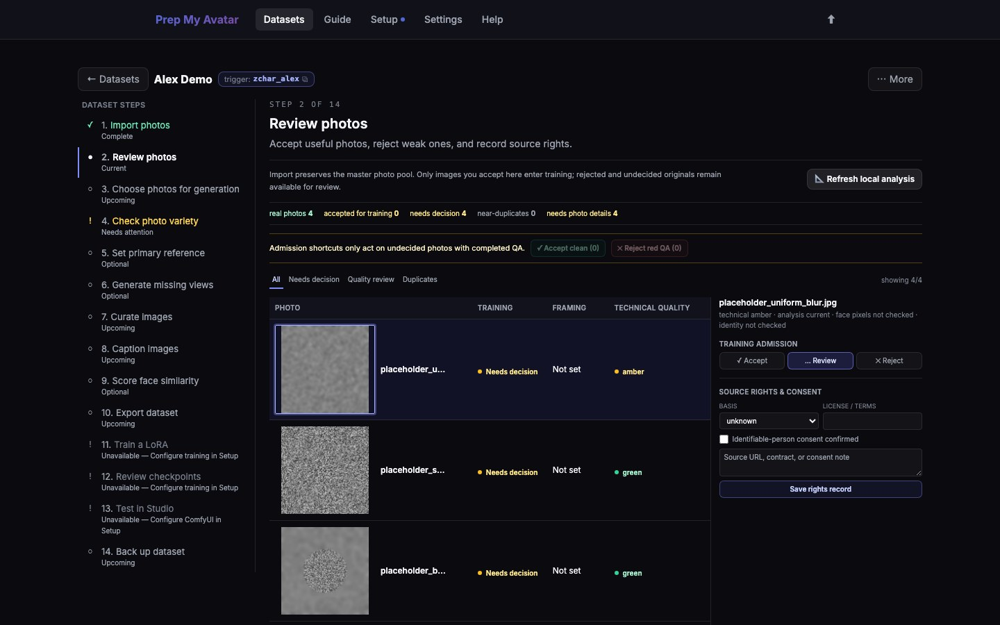

First run · 9 of 21
Step 9: Review photos
Review decides which imported images are allowed into the training set and records what each image contributes. Imported images begin as Needs decision and do not train until you accept them.

Before you begin
Open Review photos in the dataset step navigator. Its URL ends in /review. This page contains acceptance, technical-quality, duplicate, and source-rights controls only; anchors and coverage have their own pages.
Do this
- Select Refresh local analysis. This checks basic image quality and duplicates.
- Inspect warnings instead of accepting them blindly. A warning is evidence to review, not an automatic rejection.
- Select ✓ Accept for usable images and ✕ Reject for images that should not train.
- Use Accept clean only after checking the set it will affect.
- Record source rights and consent when the workbench requests them.
- Select Continue. Character datasets open Choose photos for generation; Concept and Style datasets continue directly to Curate images.
Reject blurred, unusable, or incorrect-subject images. Keep useful variety even when a photo is not aesthetically perfect.
You are finished when
Every imported image has an intentional Accept or Reject decision, and the step navigator marks Review photos — Complete. Photo details are completed separately in Check photo variety for Character datasets.